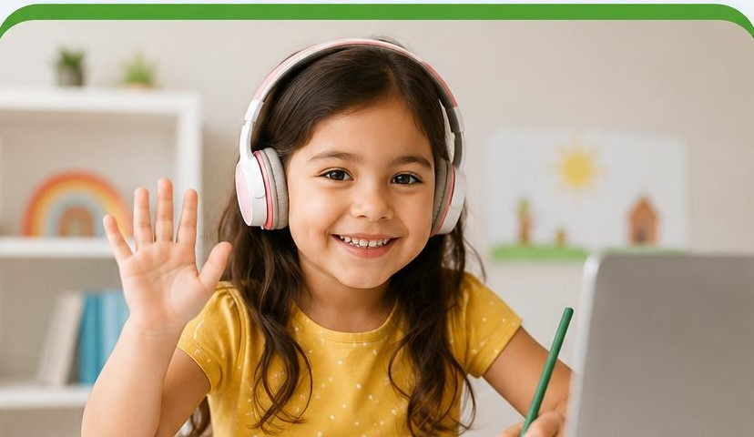

5 a 6 años
Primeros pasos en español
A través del juego, la música y los cuentos, descubrimos el mundo de las palabras.
- Juegos con sonidos y rimas
- Cuentos y canciones
- Primeras experiencias de lectura y escritura
- Actividades creativas y motrices
Qué vas a aprender:
- Desarrollo de la conciencia fonológica: descubrimos los sonidos de las palabras y los relacionamos con las letras.
- Juegos de rimas, sílabas y sonidos para iniciar el camino hacia la lectura.
- Primeras lecturas de palabras y frases sencillas, partiendo de vocabulario conocido por los niños.
- Escritura de letras, palabras y producciones simples, respetando el ritmo de aprendizaje de cada uno.
- Juegos interactivos con letras, memoria, clasificación y reconocimiento visual.
- Actividades de grafomotricidad para fortalecer el trazo, la direccionalidad y la organización del espacio al escribir.
- Juegos de movimiento que favorecen la atención, la participación y el aprendizaje activo.
- Material didáctico digital especialmente diseñado para acompañar cada clase.
- Primer acercamiento a los números mediante juegos y actividades de iniciación matemática.
Modalidad:
- Grupos: hasta 5 estudiantes por clase.
- Frecuencia: 1 clase en vivo por semana, 100% online.
- Duración: clases de 60 minutos.
- Ideal para: niños de 5 y 6 años que comienzan a descubrir la lectura y la escritura en español mientras juegan.